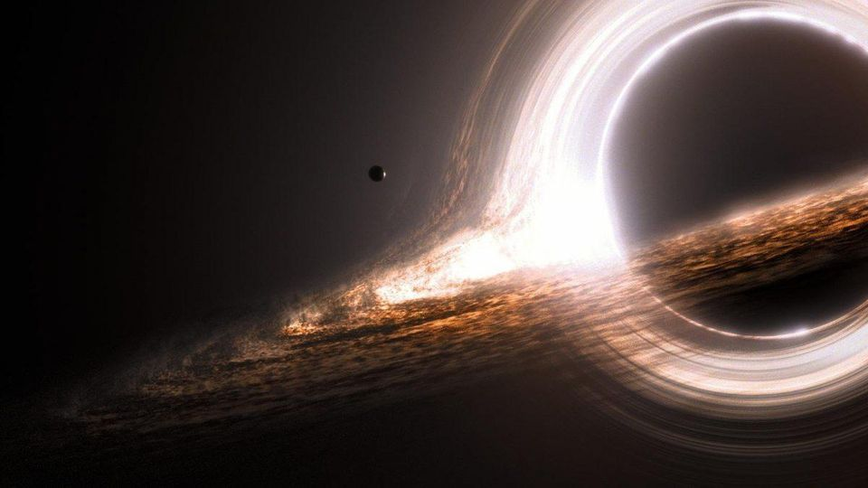

Buracos Negros: Onde Até a Luz Desaparece... Como Meu Atum!
(Foto de um buraco negro... ou é só a minha cama bagunçada?)
Buracos negros, meus amigos, são aqueles lugares no espaço onde a gravidade é tão forte que até a luz decide tirar umas férias e nunca mais voltar. Eles se formam quando estrelas enormes colapsam, tipo quando você tenta esconder sua comida e a garrafa de ração não aguenta a pressão (acontece com todos, né?). Eles são invisíveis, como o meu jeito ninja de desaparecer quando alguém tenta me dar banho, mas a gente sabe que eles estão lá porque eles sugam tudo o que passa perto. Cientistas acham que esses buracos negros supermassivos moram no centro das galáxias, incluindo a nossa Via Láctea. E eu, como um verdadeiro explorador do espaço (e mestre em fazer o que eu quiser), estou aqui para descobrir todos os mistérios, inclusive como escapar de um banho intergaláctico.